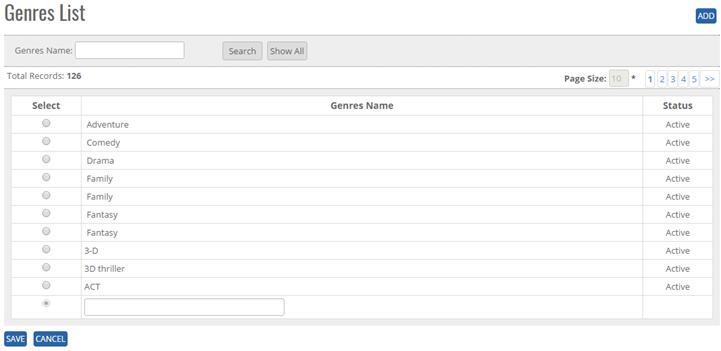
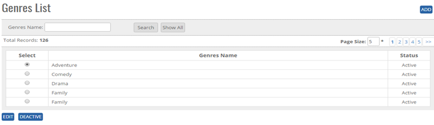


<section>

    <article>
        <h2>Genres<span></span></h2>
        <div>
            <p></p>

            <p>Genres module comes under Master Module. It can be accessed by user who has rights for this module.</p>
            <p><b>ADD New country in the master</b> </p>
            <p>Click on Genres List page. User will get Add button, search Button, Show all button, Page Record and Genres Name.</p>
            <p>Click on <b>Add button</b> at top right corner of the page shown in the above image and the following page will be opened.</p>
            <div class="triangle-border top">
                
            </div>
            <p><b>To add Genres in the system, System will be having following fields</b> </p>
            <p>- User can enter Genres name in Text Box (alphanumeric is valid)</p>
            <p>- Click on save button user will get alert message <b>"Record Saved successfully"</b>.</p>
            <p>If user adds/updates duplicate Record then User will get alert message <b>"Record Already Exist"</b>.</p>
            <p><b>Modifying Existing Genres</b></p>
            <p>The user who has right to edit can edit the existing Genres list </p>
            <p>Go To>>Master>>Genres>>Search genres>>Click Radio Button (Genres Name)>><b>EDIT</b></p>
            <div class="triangle-border top">
                
            </div>
            <p>System will allow to edit all the fields as shown in above image.</p>
            <p>Click on <b>Update</b> user will get alert message <b>"Record saved successfully"</b>.</p>
            <p>Click on <b>Cancel</b> button the record will not get updated.</p>

            <p><b>De Activate/ Activate Existing Genres</b></p>
            <p><b>DeActive</b> - Click on Deactivate Button, once the button is clicked it will ask confirmation message "Are you sure you want to Deactivate this record?" with "OK and cancel" button.</p>
            <p>If user clicks on OK Button, record will get deactivated and if clicked on Cancel, record will not get deactivated.</p>
            <p><b>Active</b> - Same way once a record is deactivated, system will show Active button. If user clicks on Active button, record will get activated.</p>

            <p><b>Search/ Show All Criteria</b></p>
            <p>- User can search the Genres name and then click on <b>Search</b>, it will show the result as per the search criteria. User can search name by single alphabet.</p>
            <p>- If user want to check all Genres name then click on <b>Show All</b> Button. It will show the list </p>
            <p>- Click on page no, System will navigate the desired page, per page 10 records will be displayed.</p>
        </div>
    </article>

</section>
